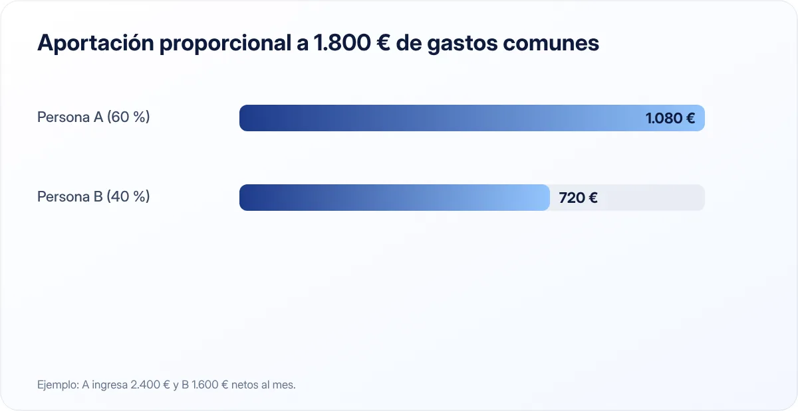

Finanzas en pareja: cómo organizar el dinero sin discutir
El dinero es uno de los temas que más tensiones genera en una pareja. No porque haya poco o mucho, sino porque no se habla. Un sistema claro lo cambia todo.

Puntos clave
- Hay tres modelos principales: todo junto, todo separado o cuenta común + cuentas individuales.
- Aportar a gastos comunes en proporción a los ingresos suele ser lo más justo cuando hay diferencia de sueldos.
- Una reunión mensual de 20 minutos evita la mayoría de discusiones.
Empieza por la conversación
Antes de abrir cuentas o repartir gastos, conviene hablar con calma de algunos temas:
- Cuánto gana cada uno y qué deudas tiene.
- Qué gastos consideráis comunes y cuáles personales.
- Qué objetivos compartís: viajes, vivienda, hijos, jubilación.
- Cómo vivió cada uno el dinero en su familia: ayuda a entender reacciones y costumbres.
No es una negociación ni un examen. Es poner las cartas sobre la mesa para construir un sistema que funcione para los dos.
Los tres modelos más habituales
| Modelo | Cómo funciona | Para quién encaja |
|---|---|---|
| Todo junto | Una sola cuenta donde entran los dos sueldos y salen todos los gastos | Parejas con mucha confianza y objetivos muy compartidos |
| Todo separado | Cada uno paga sus cosas y se reparten los gastos comunes al momento | Parejas que empiezan o prefieren máxima independencia |
| Mixto | Cuenta común para gastos compartidos + cuenta personal para cada uno | La mayoría de parejas |
El modelo mixto es el más popular porque combina lo mejor de los dos: claridad en lo común y libertad en lo personal.
¿A partes iguales o proporcional?

Si los dos ganáis algo parecido, aportar lo mismo a la cuenta común es sencillo. Pero si hay diferencia de sueldos, repartir al 50 % puede dejar a uno muy ajustado y al otro con mucho margen.
La alternativa es aportar en proporción a los ingresos:
| Ingresos netos | % del total | Aportación a 1.800 € de gastos comunes | |
|---|---|---|---|
| Persona A | 2.400 € | 60 % | 1.080 € |
| Persona B | 1.600 € | 40 % | 720 € |
Así, a ambos les queda el mismo porcentaje de su sueldo para gastos personales y ahorro.
Paso a paso para montar el sistema mixto
- Lista los gastos comunes: vivienda, suministros, compra, seguros, mascotas, ocio compartido.
- Suma el total mensual y añade una provisión para gastos anuales (lo explicamos en cómo hacer un presupuesto mensual).
- Decidid el reparto: a partes iguales o proporcional.
- Abrid una cuenta común con los dos como titulares y programad transferencias automáticas el día de cobro.
- Domiciliad los recibos comunes en esa cuenta y usad su tarjeta para la compra.
- Fijad un límite a partir del cual una compra personal grande se comenta antes.
Programad una "cita financiera" al mes: veinte minutos para repasar gastos, objetivos y lo que viene. Hablar de dinero cuando no hay problema evita discutir cuando lo hay.
Objetivos comunes
Además de los gastos, definid objetivos compartidos con cantidad y fecha: un fondo de emergencia común, la entrada de un piso, un viaje. Una cuenta de ahorro separada para cada objetivo os permite ver el progreso. El reto de las 52 semanas en pareja es una forma divertida de empezar.
Temas que conviene dejar claros
- Deudas previas: ¿se pagan desde lo personal o lo común?
- Regalos y familias: cuánto se gasta y de dónde sale.
- Herencias y patrimonio previo: cómo se gestionan.
- Régimen económico: si os casáis, el régimen (gananciales, separación de bienes…) depende de la comunidad autónoma y de lo que pactéis. Informaos ante notario si tenéis dudas.
En resumen
Hablad de dinero sin tabúes, elegid un modelo (el mixto funciona para la mayoría), repartid de forma justa, automatizad y revisad juntos cada mes.
Fuentes consultadas
Este artículo es informativo y no constituye asesoramiento financiero, fiscal ni jurídico personalizado. Las cifras son orientativas y pueden cambiar; consulta las fuentes oficiales y, si lo necesitas, a un profesional. Cómo elaboramos nuestras guías.